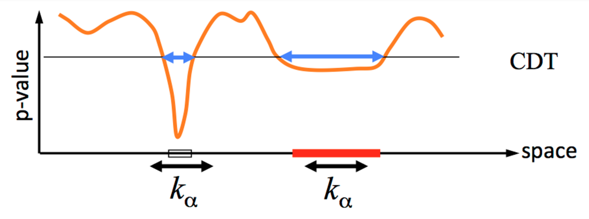

|
BY: JEANETTE MUMFORD, CYRIL PERNET, THOMAS YEO, LISA NICKERSON, NILS MUHLERT, NIKOLA STIKOV, RANDY GOLLUB, & OHBM COMMUNICATIONS COMMITTEE (IN CONSULTATION WITH THOMAS NICHOLS) In recent weeks a lot of attention has been given to the paper “Cluster failure: Why fMRI inferences for spatial extent have inflated false-positive rates”, by Eklund, Nichols and Knutsson, in the Proceedings of the National Academy of Sciences. This work highlights an important concern; however, some of the media attention has been based on a misunderstanding and an ‘inflated’ interpretation of the results. Specifically, too much weight has been given to the numbers “40,000 impacted studies” and “70% false positives”, an unfortunate side effect of reducing a study rich in information to a few soundbites. We respect the views of this paper and the effort put forth by the authors who, like the leadership of OHBM, understand there is a growing concern for validity and reproducibility in our field. The purpose of this post is to put these numbers in context and clarify how these findings impact our view of past and future fMRI results. Background: In task-based fMRI studies we are often interested in looking for systematic differences between experimental conditions or cognitive states across upwards of 100,000 voxels in the brain. It is widely known that this large number of statistical tests, typically one per voxel, requires correction for multiplicity. The most common approaches focus on control of the family-wise error (FWE), which is the probability that a given study will produce any false positives. The most common approaches for FWE control are voxel-wise and cluster-wise thresholding. Voxel-wise thresholding draws conclusions about specific voxels and cluster-wise thresholding allows one to conclude whether a group (or cluster) of adjacent voxels show an effect based on a feature, most often its size (e.g. only groups of voxels bigger than size N are significant). Eklund et al. consider both voxel-wise and cluster-wise FWE control in an exercise that tests whether the thresholding methods and their implementation by various software packages control the FWE as advertised. The innovation in this work is that they used resting-state fMRI data rather than computer generated simulation data to estimate noise (see below for more on this); they analyzed this resting-state data as if it were actually task fMRI data. Eklund et al. find voxel-wise results are always correct, i.e. control FWE below a requested 5% level, and are thus safe; we won't discuss these further. They also find that, depending on the exact methods and tools used, cluster-wise results can be invalid, i.e. have FWE in excess of the traditionally accepted 5% level. Understanding the specifics of when these methods are invalid is the focus of the article.  Figure 1. Cartoon example of how cluster-based thresholding works. The orange line represents the uncorrected, voxelwise p-values over a row of voxels (space). First, the cluster-defining threshold, CDT, is used to define the clusters, which are indicated by the boxes on the x-axis. Second, using the cluster size as the statistic, a threshold of cluster size k is used to assess the two clusters, concluding only the red cluster is large enough to be significant. A cartoon example of the cluster-wise based strategy is illustrated in Figure 1. First, a primary threshold is required to define clusters (in Eklund et al. this is called a cluster-defining threshold, CDT). The CDT is typically based on the uncorrected voxelwise p-values. SPM and FSL use random field theory to obtain FWE-corrected p-values, which requires an estimate of the spatial smoothness of the image that is being thresholded, typically a map of t-statistics that quantifies the effect size at each voxel. AFNI uses a simulation-based procedure that also relies on a smoothness estimate. In contrast, another choice is to use a permutation approach, which is based on randomly permuting data labels to generate a null distribution for cluster size that is used to compute a p-value. The approaches in the 3 widely used fMRI data analysis packages, SPM, FSL and AFNI, are variations of parametric methods, and are based on specific assumptions about the data, while the permutation method is nonparametric and requires minimal assumptions. What is unique about this work? This paper is an example of a simulation study, an evaluation of a method based on ‘made up’ data. The reason simulations are used is because quantifying FWE can only be done if the ground truth is known. Specifically, we must ensure there is no signal in the data. A simulation is most useful when the simulated data reflect what we would find in real data as closely as possible. This has been a limitation of previous studies, which generated synthetic data with software and used this synthetic data to test the performance of the analysis algorithms (Friston et al. (1994) and Hayasaka and Nichols (2003) are examples). This work uses a large pool of real human resting state fMRI data as a source of null data, or data that do not contain any task-related signal. Fitting a model of a task to the data should not find any activation. The advantage of using actual fMRI data is that the spatial and temporal structure of the noise is real, in contrast to previous simulation studies that used computer-generated null data. In the simulations in Eklund et al., random samples of subjects from the resting state data set are taken, and these samples are analyzed with a fake task design. The subject-specific task activation estimates are then entered into either a 1-sample test (to test the hypothesis that there is an effect of this task in this group) or a 2-sample test between two groups of subjects (to test the hypothesis that the effect of the task differs between the groups). Each result is assessed in the usual way, looking for FWE-corrected p-values that fall below p=0.05, and the occurrence of significant clusters (cluster-wise approach) is recorded. The authors repeat this a total of 1000 times and the FWE is computed as the number of simulated studies with any false positives divided by 1000. In theory, using p=0.05 should result in a FWE of 5%. Primary Results Brief Summary: Four study designs, two blocked and two event related, were studied across multiple degrees of spatial smoothing, different cluster-forming thresholds and different software packages. Specifically SPM, FLAME 1 from FSL, OLS from FSL, 3dttest from AFNI, 3dMEMA from AFNI, and a permutation-based approach implemented using the BROCCOLI software were studied. The main result, highlighted in the first figure of the paper, shows that when using a parametric approach, a cluster defining threshold of p=0.01 leads to poor control of FWE (FWE from approximately 4-50%). However, FWE control is improved when a cluster defining threshold of p=0.001 is used instead, regardless of software package used (FWE ranges from approximately 0-25%). The more conservative nonparametric approach controls FWE regardless of cluster defining threshold in most cases, although elevated FWE were observed for the one-sample t-test in some cases due to skewed data. The second result, which is the source of the 70% FWE that has appeared in many other blog posts, occurs when simply using a cluster size of 10 as an ad-hoc inference procedure. In this case, a cluster defining threshold of p=0.001 was used and clusters with 10 or greater voxels are identified as significant. The high FWE of this approach indicates that it should not be thought of as controlling FWE. More details and the explanation of why FLAME1 appears conservative in both of these results are in the next section. The general conclusion is that when using cluster-based thresholding, a cluster-defining threshold of p=0.001 has better control of FWE than p=0.01 for SPM, FSL and AFNI. The nonparametric-based approach has better controlled FWE in the scenarios tested here. Detailed Summary: AFNI problem identified. The results presented in this manuscript include the use of a pre May 2015 version of AFNI, specifically the 3dClustSim function used to implement the parametric FWE control. One of the discoveries made during this project was the smoothness estimate used in this older version of 3dClustSim had a flaw that increased the FWE. This was fixed by the AFNI developers in versions after May 2015. Although the new version reduces FWE, it is still inflated above the target of 5%; the p=0.01 and p=0.001 cluster defining thresholds’ FWE with 3dClustSim changed from 31.0% to 27.1% and 11.5% to 8.6%, respectively. Is FLAME1 superior? Some results appear to support the claim that FLAME1 option in FSL has better FWE control, even in the ad-hoc case, but this is due to a known problem where FLAME1 sometimes overestimates the variance. To clarify, FLAME1 differentially weights the contribution of each subject according to the subject-specific mixed effects variance, which is a sum of within- and between-subject variances. The result is that more variable subjects contribute less to the statistic estimate. In comparison, the OLS option in FSL treats all subjects equally (also true for SPM, AFNI’s 3dttest and permutation tests). When the true between-subject variance is small, FLAME1 overestimates it, causing an increase in p-values, which reduces the FWE. When the true between subject variance is not close to 0, FLAME1 results in a more accurate estimate of the variance but the FWE can then be inflated with results similar to FSL’s OLS. The resting state data have a low true between-subject variance, leading to lower FWE than we might see with task data where systematic differences in task performance might indeed yield the predicted large between-subject differences. This is supported by a secondary simulation using task fMRI data with randomly assigned groups that found FLAME1 to have error rates comparable to FSL’s OLS. Overall, this implies that the FWE will be controlled if the true between-subject variance is small and will be elevated similarly to OLS if the variance is larger than 0. Why do parametric methods fail? The assumptions of random field theory include that the spatial smoothness must be constant across the brain and the spatial autocorrelation follows a squared exponential distribution. The spatial autocorrelation distribution was not found to follow the squared exponential very well, instead the accuracy of the distribution varied according to distance. Simply put, if voxels were close together, there was a stronger agreement between the empirical and theoretical spatial correlation, but the two do not match for voxels that are far apart from each other. This explains why results improve for more stringent cluster forming thresholds, since clusters are smaller, hence the voxels involved are closer and the assumptions are more closely met. The Takeaways Should we all panic and give up on fMRI? Are all 40,000 fMRI studies of the past worthless? Of course not. The blog post by Tom Nichols refines this estimate to a more reasonable number of studies from the past that may be impacted: closer to 3,500. (Note: PNAS has accepted an Erratum from the authors that revises the sentences that led to the sensationalized press articles.) The study shows that (a) FWE control does not work properly in the parametric tests using an ad hoc threshold of 10 voxels; (b) FWE is often controlled by permutation-based testing; (c) cluster inference for SPM, FSL, and AFNI using a cluster-defining threshold of 0.01 is likely problematic; (d) although improvements would be expected if a cluster forming threshold of 0.001 was used, FWE is still not controlled at the nominal level of 5% under all conditions. How shall we proceed to analyze fMRI data? Both parametric and nonparametric-based inference have pros and cons and work well when their assumptions are met. Prior work has highlighted the assumptions of the parametric cluster-based thresholding approach, including using a small p-value based cluster defining threshold (see Friston et al. (1994) and Hayasaka and Nichols (2003) for examples). Although it was clear the threshold needed to be low, without knowing the true spatial covariance structure, it wasn’t necessarily clear how low for real fMRI data. Since the Eklund et al. work used real fMRI data in the simulations we now know that p=0.01 is not low enough and p=0.001 is a better option. Generally, the permutation test has fewer assumptions and tends to have better FWE control, but Eklund et al. did find some cases with the 1-sample t-test where the nonparametric approach had elevated FWE, due to skew in the data. Permutation-based options can be implemented on any NIfTI file using SnPM in SPM, randomise in FSL, PALM (also affiliated with FSL), Eklund’s BROCCOLI package and mri_glmfit-sim in FreeSurfer. Importantly, AFNI users should update their versions to ensure use of either the repaired 3dClustSim (after May 2015), or the new 3dFWHMx function which uses a more accurate spatial smoothness estimate and will improve FWER control. Also, using the ad hoc cluster size of 10 voxels has the largest FWE and is not recommended as a method for controlling FWE. The work of Eklund et al. supplies important information to those who choose to control the multiple comparison problem according to the FWE. In future work, researchers intending to use FWE correction can make better choices to ensure the true level of FWE is closer to the goal FWE. Although some previously published studies may have not used as stringent FWE control when they had intended to, the results can still be interpreted, but with more caution. Multiple comparison correction is just one element of neuroimaging practice, and there are countless choices in the design, acquisition, analysis and interpretation of any study. We encourage everyone to consult the OHBM Committee on Best Practice in Data Analysis and Sharing (COBIDAS) report on MRI, and review the detailed checklists for every stage of a study. The report is available directly on the OHBM website http://www.humanbrainmapping.org/COBIDASreport and on bioRxiv.
12 Comments
7/21/2016 10:54:46 am
I think more could have been said about "some cases with the 1-sample t-test where the nonparametric approach had elevated FWE, due to skew in the data".
Anders Eklund
7/22/2016 01:47:19 am
Note that we mean skew at the group level (the beta scores), not skew over time points for a single subject.
Doug Greve
9/15/2016 01:32:55 pm
A version of this argument was put forth by Flandin and Friston, who suggested that the problem would be solved by changing the stimulus schedule for each subject. But it does not appear that they tested it. I have tested it, and randomizing the designs across subject does not help. Plus, as Anders points out, just removing the first 5 time points should have fixed it.
Satrajit Ghosh
7/21/2016 04:34:35 pm
The number 0.05 or 5% appears several times in this article. While this has become a common way of declaring significance, it is a rather arbitrary decision, even if it has some practical value (see http://www.jerrydallal.com/lhsp/p05.htm for a short summary). Therefore, in addition to suggesting "we now know that p=0.01 is not low enough and p=0.001 is a better option." there needs to be concerted effort on part of the community about the need for actually sharing data as a way to avoid cherry picking models, thresholds, and multiple comparison methods (FWE, FDR, topological-FDR, non-parametric, etc.,.).
Fer
7/25/2016 11:19:32 am
All data used to run the analyses in Eklund et al, 2016 was acquired on a 3T scanner. Could exist some difference in the previous finds if one is using data from a 1.5T scanner?
Amy
7/26/2016 11:02:38 am
Thank you for your thoughts! Which method do you recommend using given the existing tools? 7/27/2016 06:38:20 am
Does anyone know that where are the resulted maps (from each random group analyses) of the 'cluster failure' paper available? 8/4/2016 12:40:17 pm
Eklund et al state that resting-state data should not contain systematic changes in brain activity. This statement comes as a bit of a surprise, given what is known about the default mode network, which one would anticipate being active at any point during the scan. For example, it seems that clusters should be found in posterior cingulate, and that rather than viewing these as false positives, they might be indications of resting-state activation. Is a list of "activation sites" (not just p-values and k sizes) in the current study available? 8/30/2016 03:23:12 pm
Eklund et al. don't posit that the brain is not doing anything during resting state. Instead, because the analysis uses a contrast, it's effectively comparing brain activity during one type of activity/epoch to another type of activity/epoch. Because intervals in the scan are arbitrarily assigned to activity one / activity two, there should be no systematic differences in activity between these two types of activity. The two-sample t-tests used throughout the paper go a step further, and look for systematic inter-individual differences in the difference described above. Specifically, one can arbitrarily label participant 1 as "type B" and participant 2 as "type A" and so on, assigning labels at random. One then tests whether "type A" participants show a greater difference in activation from activity one to activity two than do "type B" participants. Here the activity one / activity two distinction is totally arbitrary (it does not coincide with the actual task, though you may debate how it gets temporally confounded), but the distinction between participants is wholly arbitrary, since you've labeled them at random. 10/19/2016 07:59:11 am
with technology and tools we have right now, what would be the way to go? Your comment will be posted after it is approved.
Leave a Reply. |
BLOG HOME
Archives
August 2023
|
 RSS Feed
RSS Feed